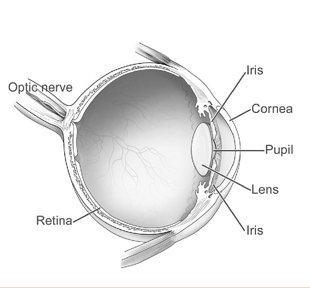
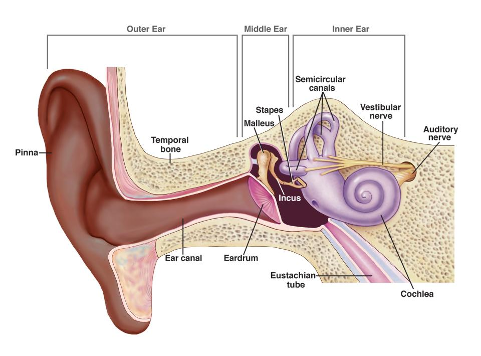

Every experience you have begins with your sensory organs detecting stimuli from the environment. This process, called Sensation, is the raw, uninterpreted data collection phase of processing. It involves specialized receptors in your eyes, ears, skin, nose, and tongue picking up physical energy (like light waves or sound waves) and chemical signals.
But how does a physical light wave become a neural signal your brain can actually understand? That happens through a process called Transduction. Transduction is the critical bridge between the physical world and the psychological world—it is the translation of incoming sensory energy into neural impulses.
1. Thresholds: When Do We Notice?
Our senses are incredibly sensitive, but they aren't infinite. There are limits to what we can detect.
Absolute Threshold: The minimum amount of stimulus energy required to detect a particular stimulus 50% of the time. (e.g., Seeing a candle flame 30 miles away on a clear, dark night).
Difference Threshold (Just Noticeable Difference or JND): The minimum difference between two stimuli required for a person to detect that they are different 50% of the time.
Weber's Law: A principle stating that to be perceived as different, two stimuli must differ by a constant minimum percentage (rather than a constant amount). If you are holding a 100-pound weight, adding 1 pound won't be noticeable. But if you are holding a 1-pound weight, adding 1 pound is extremely noticeable.
2. Vision: Catching the Light
Vision is our dominant sense. The transduction of light energy into neural messages happens in the eye, following a very specific pathway:
Cornea: The clear, protective outer layer that covers the front of the eye and bends light to help provide focus.
Pupil: The adjustable opening in the center of the eye through which light enters.
Iris: A ring of muscle tissue that forms the colored portion of the eye around the pupil; it controls the size of the pupil opening based on light intensity and emotions.
Lens: The transparent structure behind the pupil that changes shape (accommodation) to help focus images on the retina.
Retina: The light-sensitive inner surface of the eye, containing the receptor rods and cones plus layers of neurons that begin the processing of visual information.

Diagram of the human eye showing the visual pathway from the cornea to the optic nerve. (Source: Wikimedia Commons)
The Photoreceptors: Rods and Cones
Transduction actually occurs in the very back of the retina in specialized cells:
Rods: Retinal receptors that detect black, white, and gray. They are highly sensitive to dim light and are necessary for peripheral and twilight vision.
Cones: Retinal receptor cells that are concentrated near the center of the retina (the fovea). They function in daylight or well-lit conditions and detect fine detail and color.
Color Vision Theories
How do we perceive millions of different colors? Two theories explain this process at different stages:
Young-Helmholtz Trichromatic Theory: The theory that the retina contains three different types of color receptors—one most sensitive to red, one to green, one to blue—which, when stimulated in combination, can produce the perception of any color. (This explains color processing at the level of the cones).
Opponent-Process Theory: The theory that opposing retinal processes (red-green, yellow-blue, white-black) enable color vision. For example, some cells are stimulated by green and inhibited by red. (This explains color processing in the ganglion cells and the brain, as well as afterimages).
⚠️ Don't Trip Up! The Blind Spot: There is a point where the optic nerve leaves the eye, creating a "blind spot" because no receptor cells are located there. You don't notice it because your brain automatically fills in the missing information based on the surrounding area.
⚠️ Don't Trip Up! Color Theories: Trichromatic Theory and Opponent-Process Theory are NOT competing theories; they are complementary! Trichromatic explains the cones in the retina, while Opponent-Process explains the neural layers moving toward the brain.
Crash Course Psychology: Sensation and Vision. (Source: YouTube)
3. Hearing (Audition): Catching the Wave
Hearing involves the transduction of sound waves (changes in air pressure) into neural signals. The ear is divided into three sections:
Outer Ear: The visible part (pinna) funnels sound waves down the auditory canal to the eardrum, causing it to vibrate.
Middle Ear: The chamber between the eardrum and cochlea containing three tiny bones (hammer, anvil, and stirrup) that concentrate the vibrations of the eardrum on the cochlea's oval window.
Inner Ear: The innermost part of the ear, containing the cochlea, semicircular canals, and vestibular sacs.
Cochlea: A coiled, bony, fluid-filled tube in the inner ear. Sound waves traveling through the cochlear fluid trigger nerve impulses.
Hair Cells: The sensory receptors embedded in the basilar membrane of the cochlea. When the fluid moves, these hair cells bend, which triggers the actual transduction of sound into electrical signals sent via the auditory nerve.

Diagram of the ear showing outer, middle, and inner structures, including the cochlea. (Source: Wikimedia Commons)
Pitch Perception Theories
Place Theory: Links the pitch we hear with the exact place where the cochlea's membrane is stimulated. (Best explains high pitches).
Frequency Theory: The rate of nerve impulses traveling up the auditory nerve matches the frequency of a tone, thus enabling us to sense its pitch. (Best explains low pitches).
4. The Chemical Senses: Taste and Smell
Unlike vision and hearing, which respond to energy waves, taste (gustation) and smell (olfaction) respond to chemical molecules.
Taste: A chemical sense utilizing receptors in taste buds (located on the papillae of the tongue). The five basic tastes are sweet, sour, salty, bitter, and umami (savory).
Smell: Olfactory receptors in the nasal cavity catch airborne molecules. Unlike all other senses, smell bypasses the sensory switchboard (the thalamus) and goes directly to the olfactory bulb, which is closely connected to the limbic system. This is why smells often trigger vivid emotional memories.
5. The Body Senses: Movement and Balance
We often forget we have senses beyond the main five. Two critical body senses keep us moving fluidly:
Kinesthetic Sense: The system for sensing the position and movement of individual body parts. Receptors are located in your muscles, joints, and tendons. Without it, you wouldn't be able to touch your nose with your eyes closed.
Vestibular Sense: The sense of body movement and position, including the sense of balance. The biological gyroscope for this sense relies on fluid in the semicircular canals and vestibular sacs located in the inner ear.
⚠️ Don't Trip Up! Vestibular vs. Kinesthetic:Kinesthetic is about your Knees, joints, and individual body parts. Vestibular is about your overall head/body balance (and is controlled by the inner ear).
You made it through Unit 1! Try some of the review games that mix content from all the Unit 1 topics:
Connections: Head to our Connections and practice grouping concepts from all the topics.
Oddball: Can you separate the theories of vision from the theories of hearing? Test your grouping skills in Oddball.
Confusing Pairs: Have you been paying attention to the "Don't Trip Up" sections? Test yourself with our Confusing Pairs game to keep everything straight.
Topic 1.6 Quiz: Verify your understanding of thresholds, transduction, and sensory pathways with our adaptive quiz.